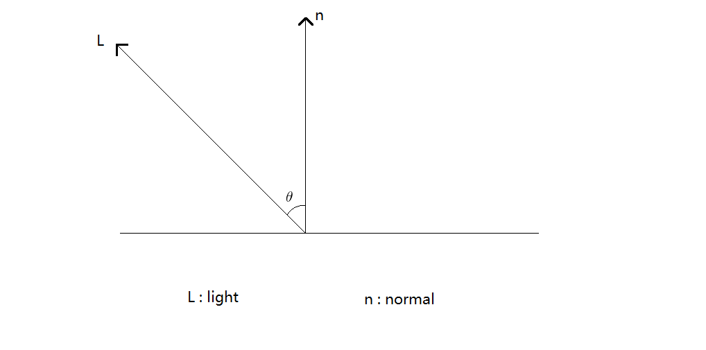
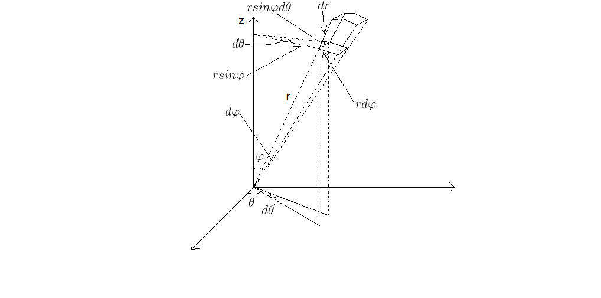
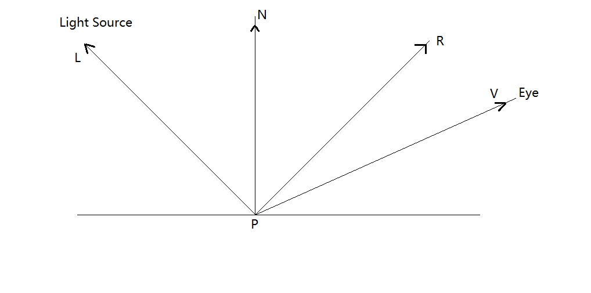
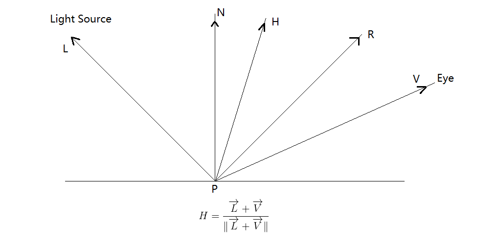

Lambert Model
$$I_o = D * I_i\cos(\theta)$$
$\rho_d$表示表面的反射率：用于描述入射光能量在表面被反射的比例。范围在[0 , 1]
$\theta$为入射光线$L$与法线$n$的夹角

Lambert Model是漫反射模型，在任何出射方向的光能都是一样
因此
$$I_o = \frac{\rho_d}{\pi}I_i\cos(\theta)$$
那么我们对所有的出射光进行积分：
$$I_{total-ouput} = \int_\Omega \frac{\rho_d}{\pi}I_i\cos(\theta)d\omega$$

$$d\omega = \sin(\theta)d\theta d\varphi$$
$$I_{total-ouput} = \int_0^{2\pi}d\varphi\int_0^{\frac{\pi}{2}}I_i\frac{\rho_d}{\pi}\cos(\theta)\sin(\theta)d\theta$$
$$I_{total-ouput} = 2\pi\frac{\rho_d}{\pi}I_i\int_0^{\frac{\pi}{2}}\frac{\sin(2\theta)}{2}d\theta$$
$$I_{total-ouput} = \rho_dI_i*(-\frac{\cos(2\theta)}{2})\mid_0^{\frac{\pi}{2}}$$
$$I_{total-ouput} = \rho_dI_i$$
与$\rho_d$的定义一致
Phong Model
该模型是个经验模型

$$I_o = k_a I_a + \sum_{m\in lights}(k_d(\overrightarrow{L_m}\cdot \overrightarrow{N})I_{m , d}) + \sum_{m\in lights}(k_s(\overrightarrow{R_m} \cdot \overrightarrow{V})^{\alpha}I_{m , s})$$
- $k_a$：环境光反射率
- $k_d$：漫反射光反射率
- $k_s$：镜面光反射率
- $\alpha$：光泽度，该值越大，表面越光滑，高亮区域越小
- $I_a$：环境光
- $I_d$：光源的漫反射分量
- $I_s$：光源的镜面分量
- $\overrightarrow{R}$：反射光方向
- $\overrightarrow{N}$：法线方向
- $\overrightarrow{L}$：光线入射的反方向，通常都是使用入射的反方向
- $\overrightarrow{V}$：指向viewer的方向
该模型由三个分量组成：环境光，漫反射光，镜面光。
环境光部分：
$$I_{o , a} = k_a I_a$$
漫反射部分：
$$I_{o , d} = \sum_{m\in lights}(k_d(\overrightarrow{L_m}\cdot \overrightarrow{N})I_{m , d})$$
镜面光部分：
$$I_{o , s} = \sum_{m\in lights}(k_s(\overrightarrow{R_m}\cdot \overrightarrow{V})^{\alpha}I_{m , s})$$
Blinn-Phong Model
该模型在Phong Model的基础上改进了计算方法

$$H = \frac{\overrightarrow{L} + \overrightarrow{V}}{\lVert \overrightarrow{L} + \overrightarrow{V} \rVert}$$
使用$\overrightarrow{N}\cdot \overrightarrow{H_m}$代替$\overrightarrow{R_m}\cdot \overrightarrow{V}$
因为$\overrightarrow{N}\cdot \overrightarrow{H_m}$可以在一开始就计算好，因此可以加快计算。
$$I_o = k_aI_a + \sum_{m \in lights}(k_d(\overrightarrow{L_m} \cdot \overrightarrow{N})I_{m , d}) + \sum_{m \in lights}(k_s(\overrightarrow{N}\cdot \overrightarrow{H_m})^{\alpha}I_{m , s})$$
环境光分量：
$$I_{o , a} = k_a I_a$$
漫反射分量：
$$I_{o , d} = \sum_{m \in lights}(k_d(\overrightarrow{L_m} \cdot \overrightarrow{N})I_{m , d})$$
镜面光分量：
$$I_{o , s} = \sum_{m \in lights}(k_s(\overrightarrow{N}\cdot \overrightarrow{H_m})^{\alpha}I_{m , s})$$